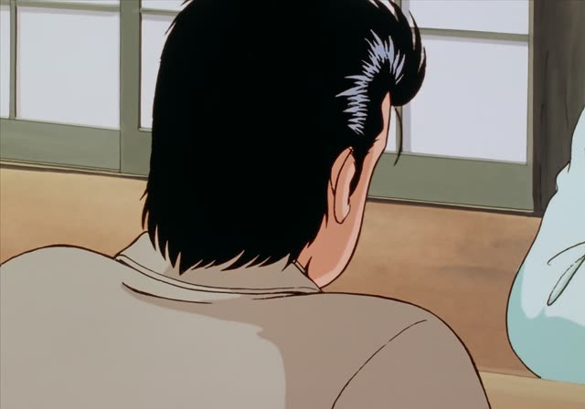
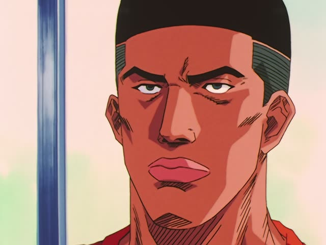

Question word + ても

Oishinbo · Episode 14
どうしてもそのアラが必要なんです。
"I need those fish scraps no matter what." [begging a supplier]
A question word + ても means "no matter what, who, where, how": 何を食べても, "no matter what I eat". Whatever you put in, the result stays the same.
The most common one is どうしても: どう (how) + しても, "no matter how", so "I just have to, at any cost". On this card, Yamaoka begs for fish scraps the shop has already promised to someone else. なんです makes it polite.
Other common ones: 何を～ても, 誰が～ても, いつ～ても, どんなに～ても, いくら～ても.
Vinland Saga · Episode 11
何を食ってもうまい季節だな。
"It's the season when whatever you eat tastes great."
On this card, Thorkell enjoys the autumn. 何を食っても: no matter what you eat. 食う is a rough casual 食べる.
Quick Examples
Your friend can't stop eating at a buffet.
何を食べてもおいしい！
"Everything I eat is delicious!"
何を + ても: no matter what.
CasualYour coworker is stuck on a problem.
誰に聞いても分かりません。
"No matter who I ask, nobody knows."
PoliteYour phone shop wants too much.
いくら安くても、今はいらない。
"However cheap it is, I don't need one now."
いくら～ても: no matter how much.
CasualYour boss asks you to cancel your trip.
すみません、どうしても行きたいんです。
"Sorry, I really have to go."
どうしても: at any cost.
PoliteWith and without
何を食べるか決めた。
"I decided what to eat." A question inside a sentence.
何を食べてもおいしい。
"Whatever I eat tastes good." Every choice ends the same.
Examples from Media
Death Note · Episode 6
どうしても捜査本部の方に直接お話したいんです。
"I really must speak to the investigation team directly."
どうしても: she won't take no for an answer.
1 Litre of Tears · Episode 8
どんなに泣いても、
"No matter how much I cry,"
The line goes on: I can't run from the illness.
Kotaro Lives Alone · Episode 3
いやあ、いつ見てもかわいいね。
"Wow, you're cute every time I see you."
いつ～ても: no matter when, every time.
Samurai Champloo · Episode 20
泣けるねえ、いつ聞いても。
"It makes me cry every time I hear it."
Quartet · Episode 8
最近、何食べてもおいしくて。
"Lately whatever I eat tastes good."
を dropped, as often in speech.
Odd Taxi · Episode 10
どう考えても勝機が見えない。
"No matter how I think about it, I can't see a way to win."
どう考えても: however you look at it.

Slam Dunk · Episode 86
それに、どんなにきつくても
"And no matter how tough it gets,"
どんなに + い-adjective くても.
Good Morning Call · Episode 8
いくらイケメンでも、好きな子のこと考えて
"However handsome he is, thinking about the girl he likes..."
After a noun: でも.